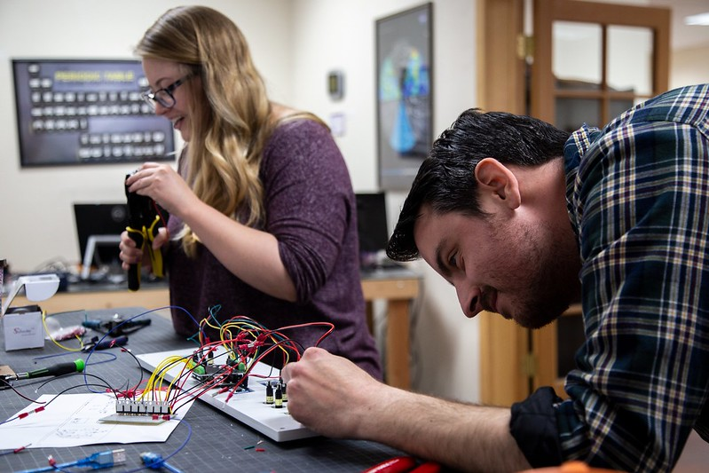

Hello! My name is Ally Goodman-Janow and I am a Software Developer.
A little bit about me
I have worked at a tech company in Corrales, NM for the past 7+ years, starting as an intern and working my way up to “Managing Senior Developer”.
My job includes tasks such as
- programming touch table applications
- researching & learning new technologies
- managing a team of developers
- managing allocations
- HR duties
- scheduling meetings
- hiring / onboarding / offboarding
Unity and C# are my main programming tools, but I have used many other languages, such as Java, C, C++, Javascript, and many more. (Entire list can be found in my resume)
I have utilized web languages, such as PHP, Laravel, HTML, CSS, Vue.js, Node.js, Directus and more.
I have also played with kinects, arduinos, and microcontrollers.

Soft skills include: organization, professional communications (written and verbal), creative thinking, & problem solving.
My goal is to eventually get into the video game industry and make fun games for everyone to enjoy.
Companies for whom I’ve made applications
- Facebook (before they were Meta)
- Smithsonian (National Museum of African Art & National Air and Space Museum)
- World War II Museum
- San Diego Zoo
- California Science Center
- Da Vinci Science Center
- Space Needle
- Verizon
- Colonial Williamsburg
- Collins Aerospace
- X-Prize / Qualcomm
And many more…
Education
I have a Bachelors of Science from the Univertsity of New Mexico with a focus in Computer Science, and a minor in Interdisciplinary Film and Digital Media.
I graduated in 2018 with a cumulative GPA of 3.8 and with honors.